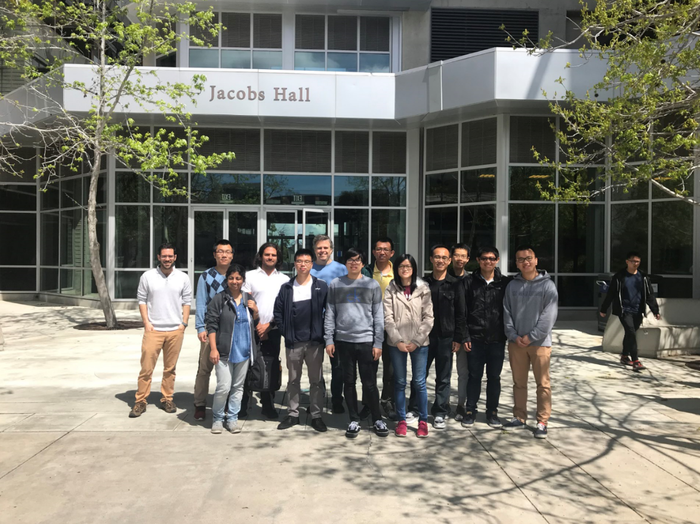
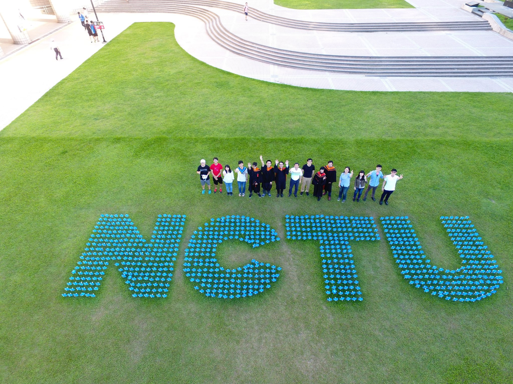
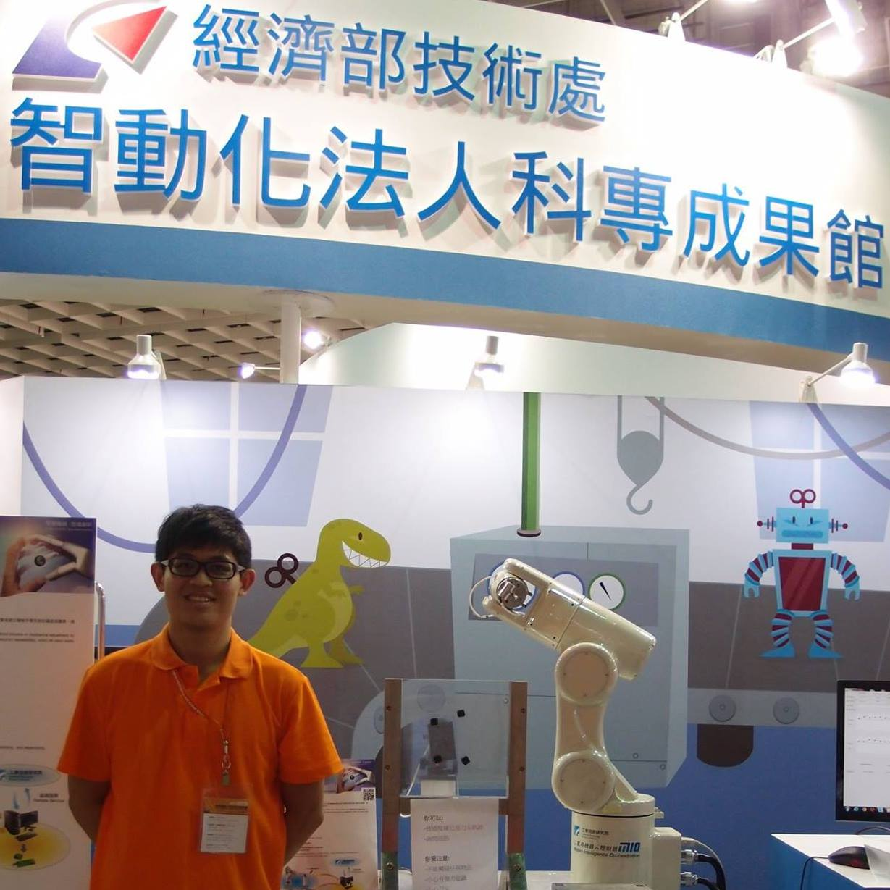

Home
About
Education
Publication
Work Experience
Research Projects
Academic service
Volunteer
Slides

Large-scale 3D reconstruction of real objects
[Project]
Study of multiview embedding, pose invariant embedding
Study of real world adversarial attack


Developed a visual grounding transformer model with 1.3x smaller size and 3x faster speed
Published a paper in ECCV 2022 Workshop on International Challenge on Compositional and Multimodal Perception. [Blogs]

Rupee bill serial number detection and recognition
Deep learning-based human activity analysis for aerial images
Principal point estimation algorithm
Automated optical inspection for bobbin defects


Robotic arm DH parameters calibration with an industrial camera
Design user interface with C# to control robotic arm and complete calibration
Represented ITRI by attending the 2015 Taiwan Automation Intelligence and Robot Show

Statistical Visual Computing Lab (SVCL) UCSD
Graduate Student Researcher
Jun 2018 - Present
Amazon AWS AI
Applied Scientist Intern
Jun 2021 - Sept. 2021
Computer Vision Research Center at National Chiao Tung University (NCTU)
Research Assistance
Sep 2016 - Jun 2017
Industrial Technology Research Institute (ITRI)
Software Engineer Intern